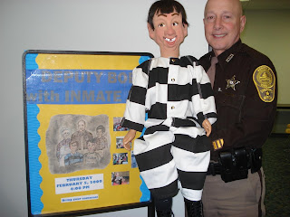

Inmate Joe's "lockup"
2/27/2009
Hi Clinton,
I have an 29 year old Craig Lovik basswood figure, Inmate Joe, whose mouth has begun sticking (wood on wood from the inside side parts it seems). I put some WD40 inside the mouth on the metal but it did nothing to improve the problem. The slot jaw works okay as long as I don't exceed the half open position but the full opened position is pulled the slot jaw sticks. Not good, but I have been working my way through public safety shows in the schools and ad libbing about him having a tooth ache if the mouth sticks.
I need to send it in soon but I am trying to get past some commitments. He is the figure that teaches "Bullying". Plus, I have to model him in the sheriff's vehicle for the St. Patrick's Day Parade in two weeks. They like the customed inmate jump suit he wears like the real prisoners. The parade viewers like it too.
My school shows are going well again this year. I enjoy making a difference in the lives of kids as a motivational ventriloquist. I have also started doing civic league and seniors programs. http://www.norfolksheriffsoffice.com/ (Community Affairs, click on Deputy Bob). Once a month, I present a kids time for the entire church at Spurgeon Memorial Baptist here locally.
This week I made a 3 minute presentation at the local WHRO with the Granpa figure I bought from you about 8 years ago on the subject of "Identity Theft." The station manager wants to put it on You Tube like the last segment last September. I have not seen it yet but gotten positive feedback about it. Thanks for your help. Deputy Bob Walsh
* * * * * *
Note from Clinton: Yes, I can fix Inmate Joe's mouth (the mouth may have to be removed and sides sanded down some). 3-5 days for repair. I prefer clear silicone lubricant (aerosol can) to WD-40 when lubricating any part on a vent figure. (WD-40 tends to gather dust which may only complicate the problem in the long run.) Tooth ache, eh? Clever!
I have an 29 year old Craig Lovik basswood figure, Inmate Joe, whose mouth has begun sticking (wood on wood from the inside side parts it seems). I put some WD40 inside the mouth on the metal but it did nothing to improve the problem. The slot jaw works okay as long as I don't exceed the half open position but the full opened position is pulled the slot jaw sticks. Not good, but I have been working my way through public safety shows in the schools and ad libbing about him having a tooth ache if the mouth sticks.
I need to send it in soon but I am trying to get past some commitments. He is the figure that teaches "Bullying". Plus, I have to model him in the sheriff's vehicle for the St. Patrick's Day Parade in two weeks. They like the customed inmate jump suit he wears like the real prisoners. The parade viewers like it too.
{kind=link}

My school shows are going well again this year. I enjoy making a difference in the lives of kids as a motivational ventriloquist. I have also started doing civic league and seniors programs. http://www.norfolksheriffsoffice.com/ (Community Affairs, click on Deputy Bob). Once a month, I present a kids time for the entire church at Spurgeon Memorial Baptist here locally.
This week I made a 3 minute presentation at the local WHRO with the Granpa figure I bought from you about 8 years ago on the subject of "Identity Theft." The station manager wants to put it on You Tube like the last segment last September. I have not seen it yet but gotten positive feedback about it. Thanks for your help. Deputy Bob Walsh
* * * * * *
Note from Clinton: Yes, I can fix Inmate Joe's mouth (the mouth may have to be removed and sides sanded down some). 3-5 days for repair. I prefer clear silicone lubricant (aerosol can) to WD-40 when lubricating any part on a vent figure. (WD-40 tends to gather dust which may only complicate the problem in the long run.) Tooth ache, eh? Clever!